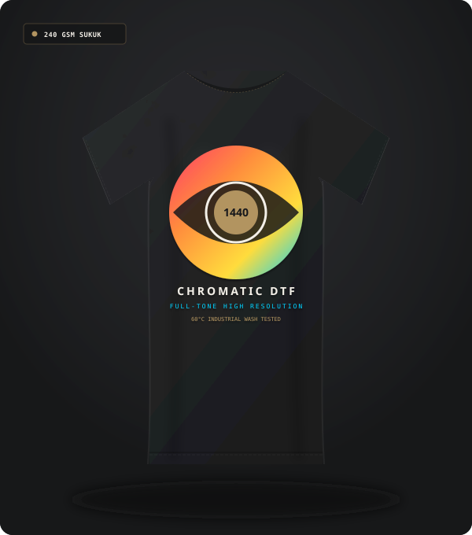
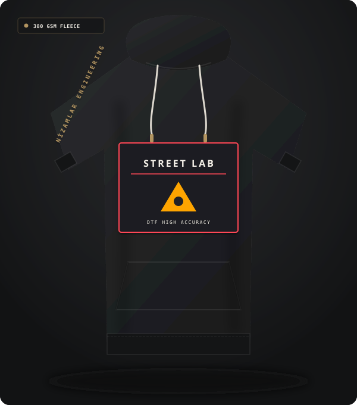

DTF // SINIRSIZ RENK

Çok Renkli Degrade Sanatsal Tişört
Mikron Düzeyinde Renk Geçişi
Sınırsız renk geçişi, yüksek tram netliği ve her kumaş yüzeyine esnek tutunma sağlayan modern dijital transfer baskı sistemi.
DTF (Direct to Film), özel su bazlı tekstil pigment mürekkepleriyle şeffaf PET taşıyıcı film üzerine ters basılan ve arkasına sıcak tutkal tozu uygulanan yeni nesil bir transfer teknolojisidir.
Geleneksel süblime baskının yalnızca açık renkli polyestere baskı yapabilme kısıtlamasını tamamen ortadan kaldırır. DTF ile koyu renkli %100 pamuk, kanvas, sentetik, elastan ve kot kumaşlara mükemmel canlılıkta baskı yapılabilir.

Film beslemeden tişört üzerine aktarıma kadar 6 adımlı canlı simülasyon.





Grafik dosyasından nihai tekstil ürününe kadar 4 adımlı standart iş akışı.
Önce CMYK desen, ardından üzerine opak beyaz boya katmanı milimetrik senkronla basılır.
Yaş boyanın üzerine otomatik çalkalama ünitesi ile homojen termoplastik yapıştırıcı toz serpilir.
Tünel fırında 140°C - 150°C ısı ile tutkal eritilerek film üzerine sabitlenir.
Pnömatik pres altında 15 saniyede kumaşa kaynaştırılır ve soğuk soyum ile film ayrılır.